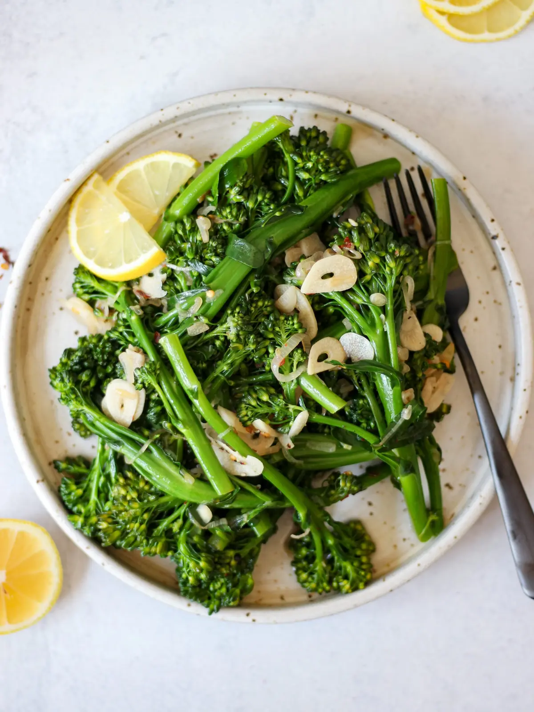

Sautéed Broccolini
- Serves4
- Ingredients7
- Steps2

Ingredients
- 1 pound Broccolini, tough bottoms trimmer
- 2 tablespoons extra-virgin olive oil
- 1 shallot, minced
- 2 garlic cloves, minced
- 2 teaspoons crushed red pepper flakes
- Kosher salt
- 2 tablespoons unsalted butter
Directions
- In a large bowl, combine the Broccolini, olive oil, shallot, garlic, and red pepper flakes. Season with salt and toss to coat evenly.
- In a large sauté pan, melt the butter over medium-high heat. Add the Broccolini and cook, flipping once or twice, until tender, 4 to 6 minutes. Serve.
Recipe credit: the MasterChef Junior Cookbook by Christina Tosi